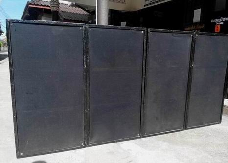

|
หลังจากที่หยอดกระปุกสะสมเงินมานาน
แต่งบฯ ยังไม่พอ จนกระทั่ง 19 มิถุนายน 2558 ที่ผ่านมา จ.อ.เสรี
ไกรสมุทร พัน.รฝ.11 กรม.รฝ.1 (สอ.รฝ.) จ.ชลบุรี ได้โอนเงินไปถวาย
1,000 บาท เพื่อให้ใช้เป็นการส่วนตัว (เข้าบัญชีเงินฝากสะสมทรัพย์
ธนาคารกรุงเทพ สาขาตลาดมะขามเตี้ย บัญชีเลขที่ 533-030465-9 ชื่อบัญชี
พระมหาบุญโฮม ไชยฤทธิ์ ซึ่งเปิดบัญชีตามระเบียบของมหาวิทยาลัยเมื่อครั้งสมัครเรียน
ป.โท นิด้า) แต่แอดมินเชื่อเป็นการส่วนตัวว่า "ทรัพย์สินเงินทองที่ได้ในขณะเป็นพระทั้งหมดเป็นของพระพุทธศาสนา
มิใช่ของเรา ควรใช้เพื่อกิจการพระพุทธศาสนาเท่านั้น ส่วนปัจจัย
4 ที่จะต้องใช้ในชีวิตประจำวันนั้น พระพุทธเจ้า พระธรรม และพระสงฆ์ได้จัดสรรโดยชอบและสมบูรณ์แล้ว
และที่สำคัญเมื่อเราทำดีแล้ว ธรรมะย่อมรักษาผู้ปฏิบัติ" ดังนั้น
จึงขออนุโมทนาแก่ จ.อ.เสรี ไกรสมุทร ไว้ ณ ที่นี้
และแล้ว เมื่อทุกอย่างพร้อม จึงได้สั่งซื้อ "ตู้ลำโพงสูตร
W แบบคางหมู ขนาด 63X122X80 ซม.(กว้าง X ยาว X ลึก) ขอบเหล็ก จำนวน
4 ตู้ ซึ่งวงการเครื่องเสียงต่างเชื่อถือกันว่าเป็นของดี มีคุณภาพ
หนักทั้งน้ำหนักและเสียงเบส" เพื่อนำไปใช้ในงานคณะสงฆ์วัดท่าไทร
(ฟรี.. รับบุญอย่างเดียว เช่นเดิม) หลังจากที่ได้รับของ เมื่อ
1 กรกฎาคม 2558 จึงจัดการใส่ดอก P.Audio 18 นิ้ว รุ่น 2242 พ่นโลโก้
แล้วเก็บเข้าที่เป็นที่เรียบร้อย แต่ยังไม่ได้ทดลองเสียง โดยตั้งใจไว้ว่าเมื่อถึงวันงานค่อยทดลองเสียงเลยทีเดียว
... จึงนำภาพมาให้ชมและอนุโมทนาด้วยกันครับ
------------------------------------------
ข้อมูลเพิ่มเติมที่เราชาวพุทธควรตระหนักรู้
ระบบเสียงในวัด
เป็นสิ่งที่จำเป็นมาก เพราะต่อให้พระนักเทศน์ จะมีความรู้ ความเข้าใจ
ทักษะในการเทศน์ถ่ายทอดธรรมะ ทัศนคติที่ดีต่อการเผยแผ่ธรรมะ และมีความประพฤติดีปฏิบัติชอบสักเพียงใด
สาระจะมากสักเพียงไหน หรือแม้แต่จะเทศน์เก่งสักเพียงใด แต่หากระบบเสียงไม่ดี
ผู้ฟังไม่ได้ยินหรือได้ยินไม่ชัด การเทศน์ การเผยแผ่พระพุทธศาสนาก็ไม่ประสบผลสำเร็จ
และการประชาสัมพันธ์ก็ไม่ประสบผลสำเร็จ ง่านก็เสีย ภารกิจก็เสีย
และหากไม่สร้างไว้ เมื่อมีงานบุญกุศลในวัด (โดยเฉลี่ยเดือนละ ๓
งานเป็นอย่างน้อย) จะต้องเช่าจากผู้ที่ให้บริการ ซึ่งนอกจะต้องเสียเงินจำนวนมากแล้ว
เวลาเปิดใช้งานก็ไม่สะดวก มิหนำซ้ำ "เครื่องเสียงที่นำมาบริการก็จะเปิดเพลงตามสไตล์ชาวบ้าน
บางครั้ง(ส่วนมาก) จะเปิดเพลงที่ขัดต่อศีลธรรม ยั่วยุกามารมณ์
และขัดต่อสภาพของวัด "
ดังนั้น
พระมหาบุญโฮม ปริปุณฺณสีโล จึงจัดสร้างระบบเสียงเพื่อใช้ในงานบุญกุศลและกิจการคณะสงฆ์
(ฟรี) ด้วยเงินส่วนตัว เพื่อให้เกิดบุญกุศลอย่างเดียว แอดมินรับบุญเต็ม
ๆ หากมีวัสดุอุปกรณ์ใดขัดข้อง เสียหาย แอดมินก็รับผิดชอบค่าใช้จ่ายเอง
วัดและคณะสงฆ์ไม่ต้องแบกรับภาระใด ๆ
ตลอดระยะเวลา ๒๖ ปีเศษที่ผ่านมา ที่แอดมิน (พระมหาบุญโฮม)
มาอยู่ที่วัดท่าไทร ได้สร้างตู้ลำโพงและระบบเสียงสำหรับใช้ในงานบุญและศาสนกิจภายในวัด(ฟรี)
เท่านั้น โดยสร้างจำนวน ๔ ครั้งใหญ่ ในการสร้าง ๓ ครั้งแรกตีตรา
"วัดท่าไทรซาวด์" แต่อะไร ๆ ก็ตามที่ขึ้นชื่อว่า "ของวัด"
มักจะมี "ผู้สู่รู้ มากความคิด เก่งแต่ปาก แต่ไม่เคยสร้างสรรค์อะไรที่ดีแก่ส่วนรวม"
ชอบเข้าไปยุ่งเกี่ยวเสมอ ไม่นานสิ่งของก็พังเสียหายแล้วไม่เคยมีใครแสดงความรับผิดชอบ
สุดท้ายแอดมินจึงตัดสินใจสร้างขึ้นเป็นครั้งที่ ๔ แล้วตีตรา "พระมหาบุญโฮม"
เมื่อ ๑๑ ปี เศษที่ผ่านมา ซึ่งรอบนี้ใช้ได้นานที่สุด มีคุณภาพเสียงที่ดีที่สุดกว่าทุกครั้ง
และใช้เงินเพื่อการนี้มากที่สุดกว่าทุกครั้ง แต่ก็รำคาญปากหอยปากปูที่ไม่เคยช่วยเหลืออะไรในเลย
การสร้างระบบเสียงนี้ มิใช่เพราะชอบ แต่เพราะความจำเป็นต่อการใช้งาน
พอเหมาะ พอควร เข้ากับบริบทของวัด เพื่อให้ศาสนกิจเป็นไปได้ด้วยดี
มีประสิทธิภาพในการปฏิบัติงาน เพื่อให้เหมาะสมและทันต่อเวลา ประหยัดและคุ้มค่าใช้จ่าย
มีคุณภาพ และความพึงพอใจต่อพุทธศาสนิกชนผู้มาร่วมงาน ครับ
ทุกครั้งที่ พระมหาบุญโฮม ปริปุณฺณสีโล ได้สร้างตู้ลำโพงใหม่ขึ้นมาใช้ในงานบุญกุศลของวัด(ฟรี)ด้วยเงินส่วนตัวแทนของเดิมที่มีอยู่แล้ว
ก็จะบริจาคตู้ลำโพง/ดอกลำโพง ฯลฯ ของเดิมนั้น ให้แก่วัดต่าง ๆ
อยู่เป็นประจำ ซึ่งหากประเมิน/คิดเป็นเงินแล้ว ก็เป็นจำนวนที่มิใช่น้อย
หลังเคร่งเครียดและเมื่อยล้าจากอ่านหนังสือหรืองานอื่น
ๆ แอดมิน(พระมหาบุญโฮม)มักจะหาอะไรทำสักอย่างเพื่อผ่อนคลายความเหนื่อย
เมื่อยล้า เช่น เขียนหนังสือทางวิชาการ ผลิตสื่อ ทำตู้เก็บของ
ตู้ลำโพง ทำโต๊ะ เก้าอี้ ซ่อมโน่นนิดนี่หนอย ปลูกต้นไม้ ฯลฯ (ด้วยเงินเก็บเล็กผสมน้อยเก็บเล็กผสมน้อยจากกิจนิมนต์บ้าง
มีผู้ถวายบ้าง ศาสนกิจบ้าง แอดมินเชื่อโดยสนิทใจว่าโยมถวายปัจจัย(เงิน)มาให้สร้างประโยชน์ต่องานคณะสงฆ์
มิใช่เพื่อให้เก็บไปใช้ส่วนตัว จึงหยอดกระปุกไปเรื่อย ๆ เมื่อพร้อมจึงค่อยคิดสร้าง/ซื้อวัสดุอุปกรณ์
และเครื่องมือมาเตรียมไว้) สำหรับใช้ในวัดและศาสนกิจของสงฆ์มาโดยตลอด
.. .จึงนำภาพมาให้ชมเผื่อท่านใดจะเอาอย่างไปประยุกต์ใช้โดยแอดมินไม่สงวนสิทธิ์นะครับ
|
|
|

|
|
ตู้ลำโพง
W จำนวน 4 ตู้ ซึ่งหนักมาก (ตั้งกับพื้น) ส่งถึงใหม่ๆ
|
|
ตู้ลำโพง
W จำนวน 4 ตู้ ดูระยะใกล้
|
|
|
|
|
|
สติ๊กเกอร์/ฉลากฝากส่งติด้านหลังตู้ลำโพง
W จำนวน 4 ตู้
|
|
ช่องรีดเสียงภายในตู้ลำโพง W จำนวน 4 ตู้
|
|
|
|
|
|
เปิดฝา/ฟินเตอร์ด้านหน้าออก
เพื่อดูช่องระบายลมด้านหน้า รุ่นนี้มี 2 รู/ช่อง
|
|
พ่นโลโก้
"อ.บุญโฮม วัดท่าไทร" ด้านหลังตู้ลำโพง W จำนวน
4 ตู้
|
|
|
|
|
|
จุดต่อ/เสียงชนิด
"สเปคค่อน" ทั้ง IN & Link อยู่ด้านหลังตู้
|
|
เก็บเข้าที่เพื่อใช้ในกิจการคณะสงฆ์ฟรี
ต่อไป(ด้านบนเป็นตู้เสียงกลางแหลม)
|
|
|
|
|
|
ลักษณะของตู้ลำโพง
W ที่ดี ของแท้ ต้องมีช่องรีดเสียง
|
|
ลักษณะของตู้ลำโพง
W ที่ดี ของแท้ ต้องมีช่องรีดเสียง โดยแยกออกมาให้ดู
|

กลับไปหน้า
Web วัดท่าไทร
ไป Web สำนักงานเจ้าคณะภาค
๑๖
ไป
Web ศูนย์พัฒนาคุณธรรมภาคใต้
ไป
Web วิทยุชุมชนตำบลท่าทองใหม่
ไป Web ชมรมวีอาร์ร้อยเกาะสุราษฎร์ธานี
|